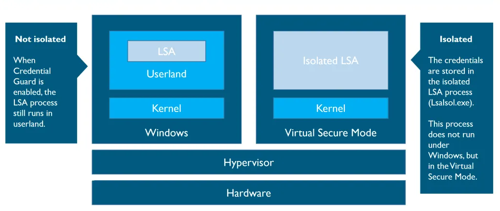
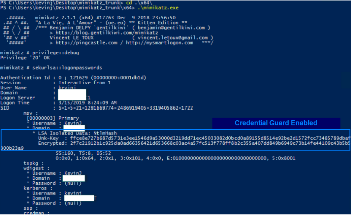

enable Credential Guard
Credential Guard available only:
• Windows 10 Enterprise
• from Windows Server 2016
Normally Windows stores credentials in the Local Security Authority (LSA) which is a process in memory.
With
Windows Defender Credential Guard, Windows uses
Virtualization-based security to isolate LSA in a virtualized environment. This environment is isolated from the running OS and only privileged system softwares can access them.
 Credential Guard fully protect an endpoint?No! Mimikatz is capable of capturing the credentials being entered. The author of Mimikatz mentions in a
tweet that if a malicious actor has control of an endpoint, and a privileged user logs in after the machine has been taken over, it is possible for them to get the credentials and elevate their privileges.
Bibliography:
•
https://stealthbits.com/blog/defender-credential-guard-protecting-your-hashes/•
https://blog.nviso.eu/2018/01/09/windows-credential-guard-mimikatz/